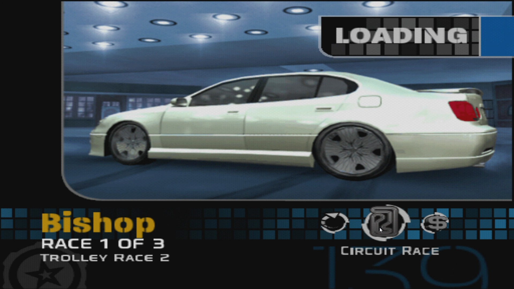
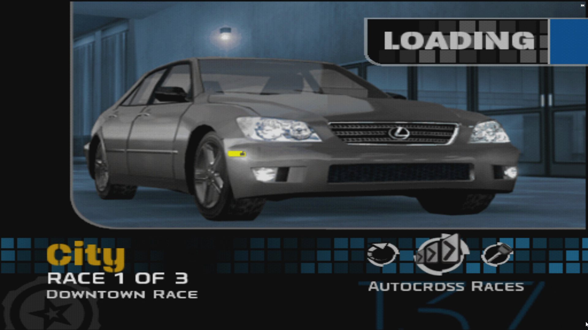
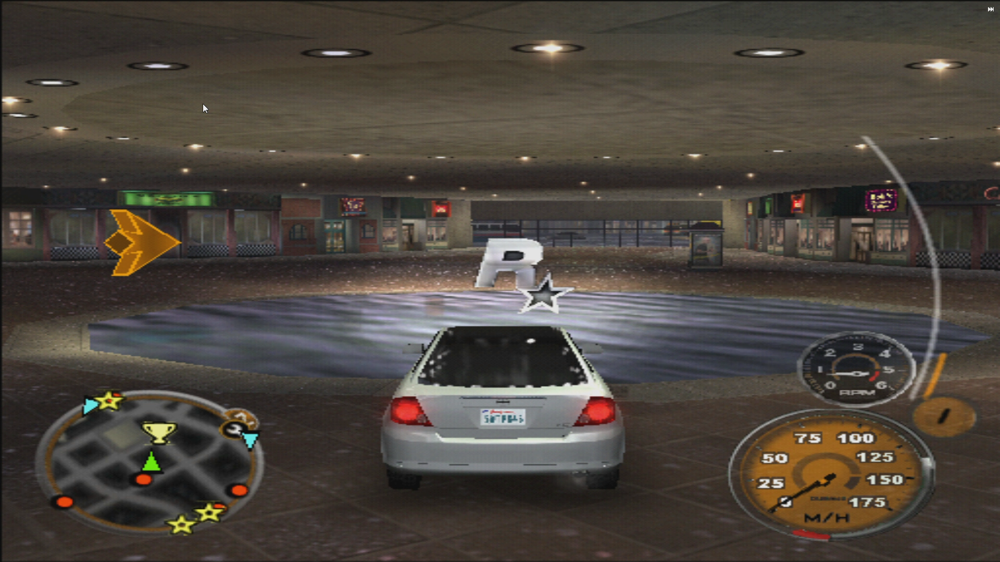
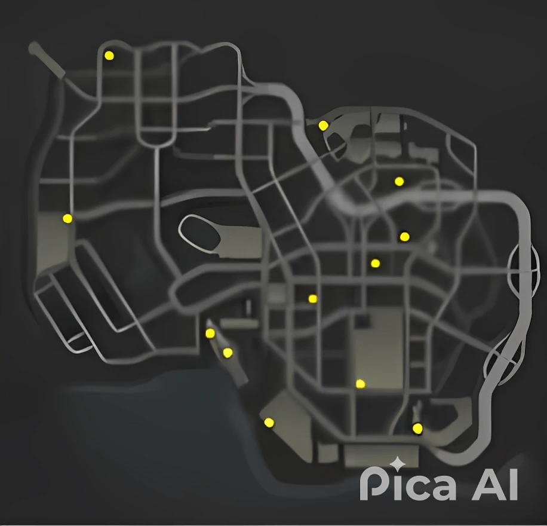
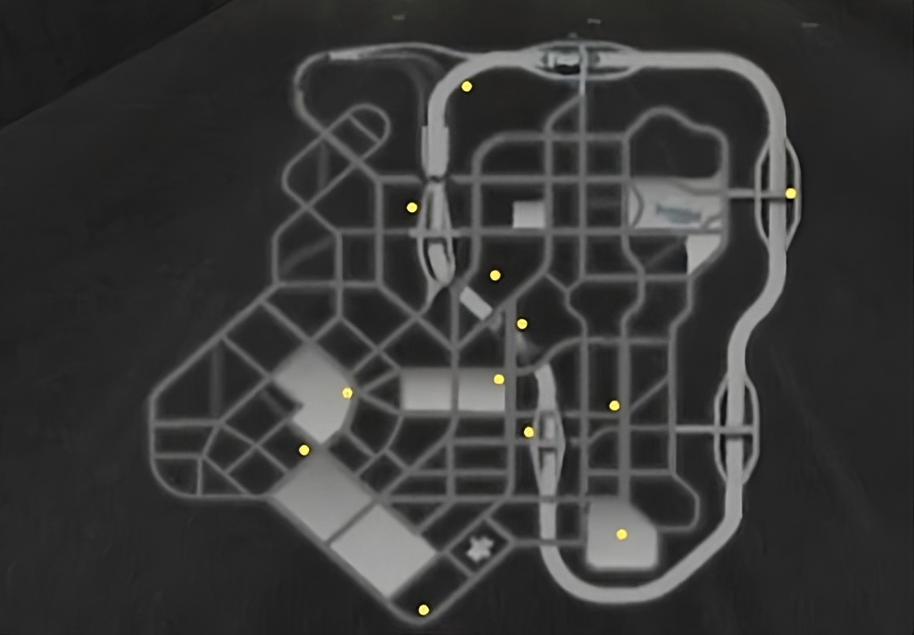
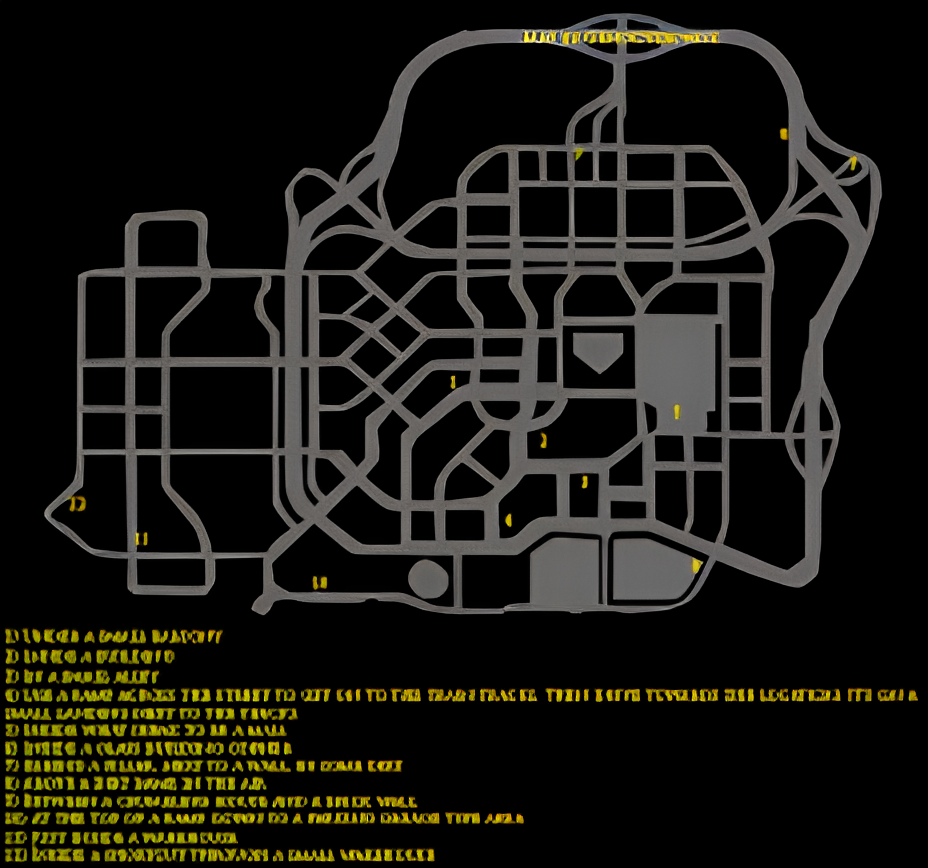

Midnight Club 3 DUB Edition
Sinópese
Midnight Club 3: DUB Edition é um jogo eletrônico de corrida desenvolvido pela Rockstar San Diego e publicado pela Rockstar Games. Foi lançado em abril de 2005 para PlayStation 2 e Xbox. Um porte para PlayStation Portable, desenvolvido pela Rockstar Leeds, foi lançado em junho de 2005. No ano seguinte, um relançamento atualizado do jogo, intitulado Midnight Club 3: DUB Edition Remix, foi lançado para PlayStation 2 e Xbox. É o terceiro título da série Midnight Club e a sequência de Midnight Club II (2003). Assim como os jogos anteriores da série, Midnight Club 3: DUB Edition se concentra em corridas de rua em cidades reais. O modo carreira exige que o jogador participe de corridas ilegais para se tornar o melhor corredor de rua, enquanto que o modo arcade oferece a liberdade de participar de corridas em opções de um ou múltiplos jogadores com a capacidade de personalizar as condições da competição. As cidades do jogo são San Diego, Atlanta e Detroit, por meio das quais o jogador possui a liberdade de se locomover pelo seu mundo aberto. Pela primeira vez na série, carros e motos apresentados foram licenciados, com o jogador também possuindo a capacidade de personalizar os seus veículos. O desenvolvimento de Midnight Club 3: DUB Edition começou em 2003, logo após o lançamento de Midnight Club II. Ao criar o novo título, a Rockstar Games firmou um acordo de parceria com a revista automotiva DUB Magazine, graças à qual os desenvolvedores incluíram muitos conteúdos licenciados ao jogo. Após o seu lançamento, Midnight Club 3: DUB Edition foi bem recebido pela crítica, que elogiou a qualidade de seus gráficos, trilha sonora e variedade de modos, mas criticou o seu nível de complexidade e taxa de quadros instável. Foi bem-sucedido comercialmente, vendendo mais de cinco milhões de unidades. Uma sequência, Midnight Club: Los Angeles, foi lançada em outubro de 2008.
História do Jogo
O jogo se concentra em corridas de rua, que acontecem em três cidades dos Estados Unidos - San Diego, Atlanta
e Detroit e uma cidade do Japão - Tokio (Essa cidade é restrita apenas para a versão REMIX do jogo). Em cada uma das cidades,
o jogador pode explorar livremente através do mundo aberto do jogo, possuindo mudanças nos horários do dia e nas condições
climáticas. Nas cidades principais existem 4 tipos de corridas, são elas:
Ponto a ponto - É um modo onde a corrida inicia em um ponto da cidade e finaliza em outro sem a obrigação de seguir um
número de voltas pré determinado.

Circuíto - É o modo onde a corrida tem um número pré determinado de voltas variando entre 2 ou 3 voltas por corrida.

Autocross - É o modo onde o jogador é desafiado a correr em uma pista com muretas no meio da cidade onde o desafio
principal é bater o tempo estimado no inicio da sessão. O player tem 3 tentativas para bater esse tempo.

Coletaveis
O jogo possui coletaveis espalhados por todos os 3 mapas principais com o logo da empresa criadora do mesmo ROCKSTAR.
Cada cidade possui 12 coletável espalhados por cada mapa, ao coletar todos os ROCKSTAR´s, o player desbloqueia um Cadillac, novas placas e várias opções de skins para o piloto das motos e motocicletas. A localização dos mesmos em cada mapa são:
San Diego:
Atlanta:
Detroit:
Mapas
O jogo possui 4 mapas sendo um deles disponível apenas na versão REMIX do jogo (O mapa de Tokio). Cada mapa apresenta uma ambientação temática de cada cidade.